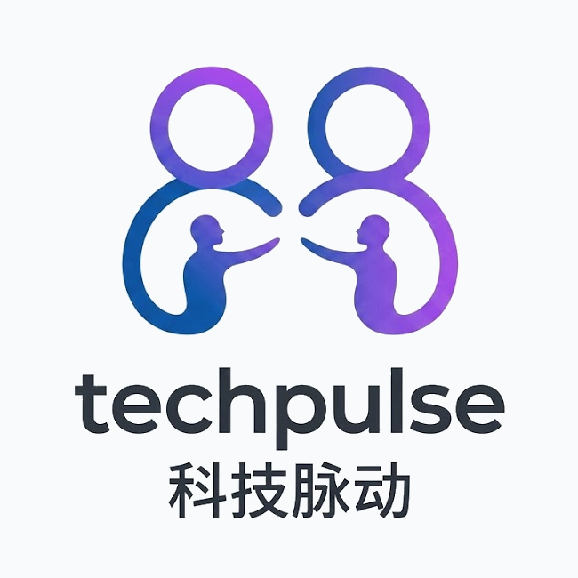
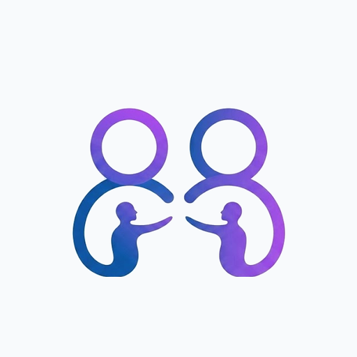

图形标
用于网站顶部导航、紧凑工具栏、头像位和小尺寸品牌露出。保留图形主体，不重复显示中英文品牌名。
正式采用“Connected AI Pulse”作为主识别：双节点代表全球科技信息源与中文用户，中间人物互动表达 AI 协同和内容连接。

已采用你提供的图片作为正式 Logo：完整裁剪版用于品牌展示，导航栏使用只保留上方图形的裁剪版。两个节点代表全球科技信息源与中文用户，中间人物互动表达 AI 协同和内容连接。
用于网站顶部导航、紧凑工具栏、头像位和小尺寸品牌露出。保留图形主体，不重复显示中英文品牌名。
用于封面、品牌页、提案、合作方资料和分享海报。包含图形、TechPulse 英文名和“科技脉动”中文名。

用于浏览器标签页、PWA 安装图标和移动端收藏。已生成 PNG、ICO 和 Apple Touch Icon。
用于微信、Telegram、X、LinkedIn 等链接预览。尺寸为 1200 × 630，已配置到全部页面头部。